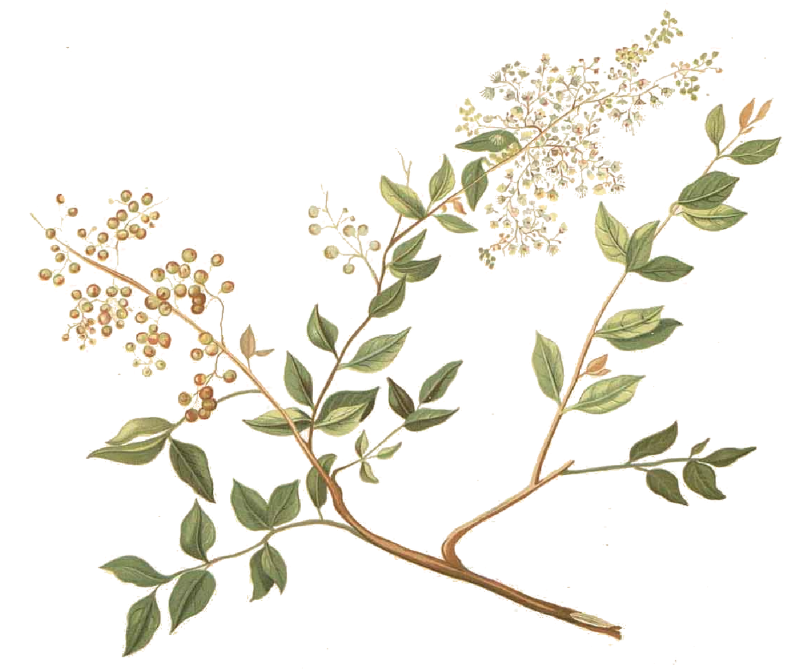
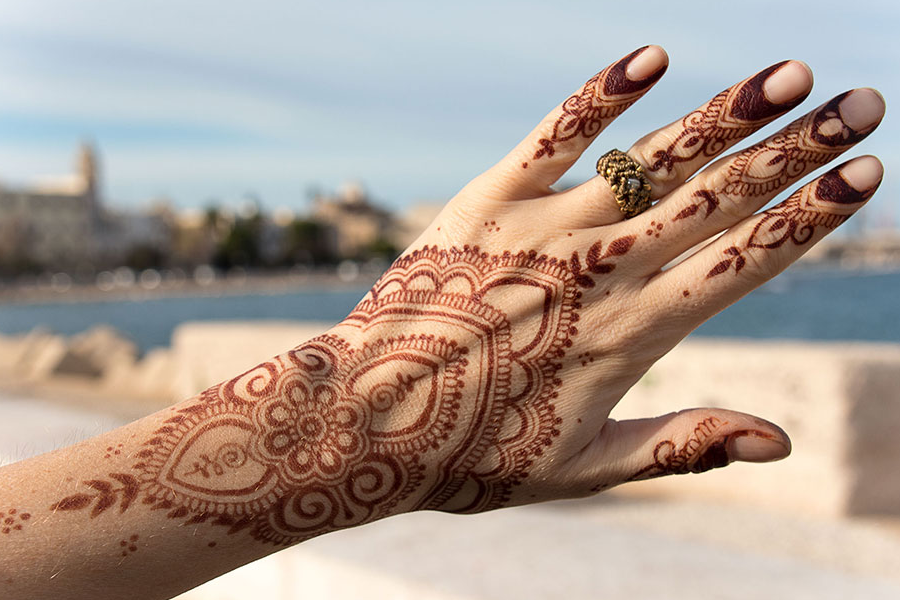

Czym jest henna?
Henna to sproszkowane liście lawsonii bezbronnej (łac. lawsonia inermis) - rośliny występującej w tropikalnych obszarach Afryki i Azji.
Najczęściej spotykane w naszych sklepach henny pochodzą z Indii, Pakistanu, Jemenu, Maroka i Egiptu.
Do farbowania włosów, a także do tatuaży z henny wykorzystuje się czystą, proszkową postać henny, rozrobioną na kilka godzin przed użyciem.
Co z hennami do brwi czy "tatuażami z henny" robionymi na każdym rogu w miejsocwościach wypoczynkowych? Kosmetyki te mogą (a wcale nie muszą!)
zawierać śladowe ilości barwnika henny, reszta to sztuczne barwniki, niekiedy silnie alergizujące.
Dlatego też jeśli szukamy w sklepie henny, to tylko w proszku i w składzie INCI wybranego produktu powinno znajdować się jedynie "Lawsonia Inermis Leaf Powder".
Jak działa henna?
Henna na skórze działa powierzchownie. Jej barwnik jest nietrwały - "prawdziwe" tatuaże z henny (mehendi) mają trwałość przeciętnie do kilku-kilkunastu myć.
Inaczej rzecz się ma z włosami. Henna, w przeciwieństwie do farb chemicznych, tworzy trwałe wiązanie z keratyną znajdującą się we włosach (nie oblepia ich ani nie wytrawia!).
Dzięki temu, po kilkukrotnym farbowaniu można zauważyć pogrubienie włosa. Ponadto, henna "uzupełnia" ubytki we włosach, dając już po pierwszych farbowaniu efekt lepszej kondycji włosów - włosy są lśniące i mocniejsze.